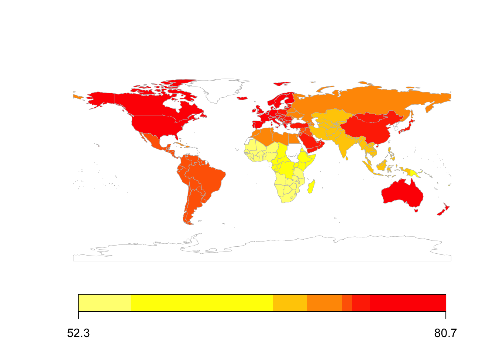

Projects
Tools Link to heading
Athletics results scraper
code to scrape individual athlete trial data from multi-trial athletics events
Shotgun results scraper
code to scrape shot-by-shot shooting competition results from the ISSF website
Tutorial on Bayesian updating
tutorial for performing Bayesian updating with Bayes factors for sample size estimation in research studies
Analyses Link to heading
simulated 2025 fixture 10,000 times to produce probabilistic predicted ladders, and communicated method and results to lay audiences
scraped diverse data (e.g. historic match outcomes, betting odds), developed metrics to quantify competitiveness, and presented evidence for increased competitiveness in subsequent women's fifa world cups

applied regression and random forest models to predict national life expectancies, determined key contributing factors, and proposed interventions to policy makers
fused large catalogs (+300k observations) of galaxy clusters and radio sources to detect a certain rare type of galaxy, performed statistical tests to compare different galaxy groups, and calculated physical properties of galaxies (with python and bespoke astrophysics software)